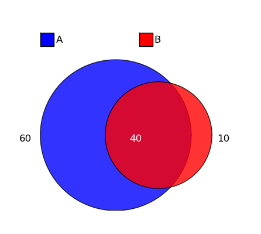

This is all the documentation for this module.
Example:
>>> from pyvenn import do_venn
>>> from matplotlib.pyplot import show
>>> do_venn(10, 10, 0)
>>> do_venn(10, 50, 10)
>>> do_venn(100, 50, 10)
>>> do_venn(100, 50, 40)
>>> show()
>>> do_venn(100, 50, 40,plot_fn='venn.png')
This example code is at the bottom of pyvenn.py. Look at venn.png for example output.
General purpose library for producing 2-D Venn diagram graphics in python.
This is the function you’ll probably want to use:
Create a venn diagram figure with the specified membership numbers:
- *A* is the # in class A
- *B* is the # in class B
- *C* is the # in both A and B
If plot_fn is not provided, no figure is written to disk and the matplotlib.Axis object with the diagram drawn is returned.
These are helper functions that you probably won’t need to use but are included nonetheless:
Construct a set of points of a circle centered around origin using quadratic bezier curves functions. n is the number of points desired.
Construct a set of points of a circle centered around origin using trigonomic functions. n is the number of points desired.
Returns a set of points representing the quadratic bezier curve with p0, p1, and p2 as reference points. Reference point arguments are length 2 numpy arrays, n is the number of points making up the curve.
Returns the bezier point returned with p0, p1, and p2 as reference points at fraction t along curve. Reference point arguments are length 2 numpy arrays.
Returns a set of points representing the cubic bezier curve with p0, p1, p2, and p3 as reference points. p0, p1, p2, and p3 are length 2 numpy arrays, n is the number of points making up the curve.
Determine the optimal radii, distance from circle origins, and coordinates where circle edges intersect for given proportions:
- *A* is the # in class A
- *B* is the # in class B
- *C* is the # in class A and B
Returns 4-tuple of (A radus, B radius, distance between, intersections). Intersections is a 2-tuple of 2-tuple cartesian coordinates in the coordinate system set by the origin of circle A is (0,0).